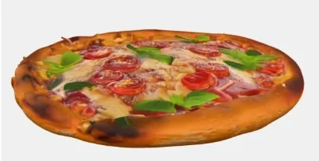

Nuestros Proyectos

Menú Digital Interactivo
Sistema completo de menú digital con sistema de reservación y mucho mas.
Restaurante

Página Web Completa
Diseño responsive y moderno para restaurantes
Web Design

Visualización 3D
Modelos 3D interactivos para showcases
3D Design